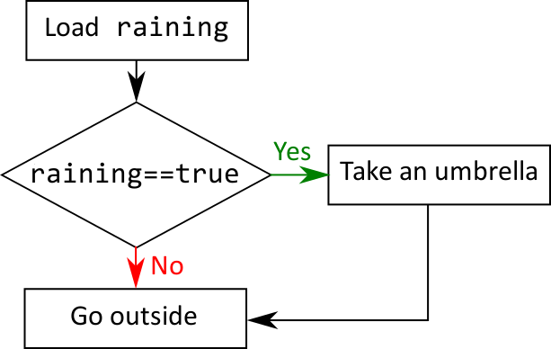
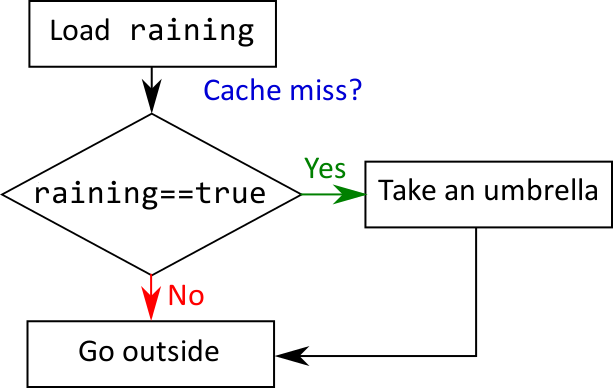
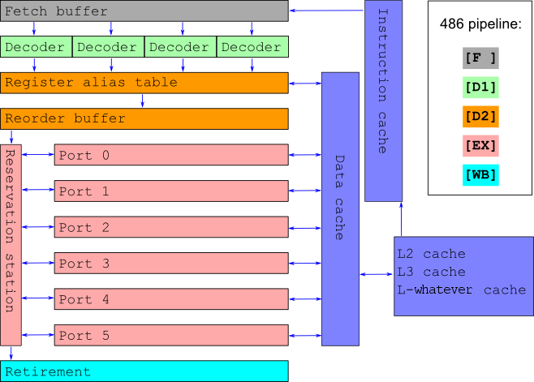
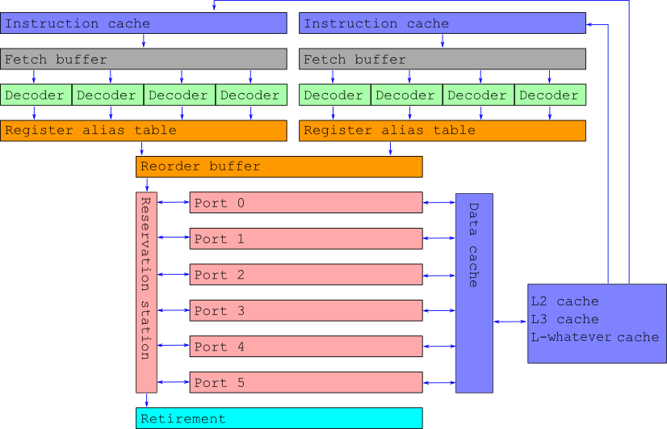

Hello, World
- These slides are here: is.gd/cpufriend
- Borislav aka Bobi aka iboB
- Mostly a C++ programmer
- Mostly a game programmer
- I also do open source

Optimization is the root of all evil
Donald Knuth
Optimization is the root of all evil
Donald Knuth
Premature optimization is the root of all evil
Donald Knuth
Premature optimization is the root of all evil
Donald Knuth
We should forget about small efficiencies, say about 97% of the time: premature optimization is the root of all evil
Donald Knuth
This talk is to a great extent about those 3%

To some extent, optimization is to our industry what sexual intercourse is to teenagers. There's a veil of awesomeness surrounding it; everybody thinks it's cool, has an opinion about it, and talks about it a great deal; yet in spite of ample folklore, few get to do it meaningfully or at all.
Andrei Alexandrescu
This talk is about fundamental principles and not about algorithms

It's 2018. Who writes code for the CPU?
Blagovest Taskov
Why CPU and not GPU?
- The GPU is crazy-mega-powerful for some problems.
- Blah-blah architectural differences
- The GPU is a bad choice for these problems:
- Few data: PCI-bus overhead
- Non-parallelizable algorithms
- Sometimes we're GPU-bound
- Still some things apply equaly for GPU-s
Add more hardware!

We'll focus on low-level concepts and won't talk about multi-threading.
We will talk about hardware... a least a bit
O-notation isn't everything
O-notation
- An asymptotic evaluation of the complexity of an algorithm
- Very useful and widely used
- Θ-notation, Ω-notation, etc
- We evaluate the growth of the complexity based on the growth of the input
- Little-letter notation (о, ω) - too conservative
- The real complexity still exists
Example: О(1)
Take the sixth element from a container.
std::vector<int> v;
...
int sixth = v[6]; // !
Theoretical real complexity: 1
std::list<int> l;
...
auto isixth = l.begin();
for(int i=0; i<6; ++i) ++isixth;
int sixth = *isixth; // !
Theoretical real complexity: 6
Example: О(n)
Sum the elements from a list.
int sum = 0;
for(auto elem : container) sum += elem;
Theoretical real complexity: n
point3 sum = {0, 0, 0};
for (const auto& elem : container) {
sum.x += elem.x;
sum.y += elem.y;
sum.z += elem.z;
}
Theoretical real complexity: 3n
Hacking O-notation
Constant complexity: 1000.
- Linear for less than a 1000 elements is faster
- Quadratc for less than 32 is faster
- Cubic for less than 10 is faster
Linear complexity: 100n.
- Quadratic for less than 100 is faster
- Cubic for less than 10 is faster
...
It's useful to have an idea of the real complexity and the size of the input
Modern hardware makes the real complexity
pratically impossible to calculate
But nevertheless...
Cache ($)
Cache is memory close to the CPU
Cache levels - the closer, the faster

RAM (→ L4?) → L3 → L2 → L1
How does this work?
Responding to "Give me data on address X!" leads to potentially different strategies. For example:
4KB to L3 → 256B to L2 → 64B to L1
- The data is in the cache - cache hit
- It it's not - cache miss
How much does this cost?
- L1: ~4 cycles
- L2: ~10 cycles
- L3: ~20 cycles
- RAM: ~100 cycles
What does this mean?
- Fast stuff:
- Value types / PODs
- Contiguous memory
- Slow stuff:
- Indirections (pointers)
- This includes dynamic polymorphism
- Array-of-structs vs Struct-of-arrays

Less cache misses lead to a happier CPU
Bulgarian folk proverb
Types of cache
- Data - Our data. What the examples were about
- Instruction - The code of the program. A demo is hard :(
- TLB - for virtual memory. We don't have control over this
- All of these are L1. L2+ are mixed
Branch
Well... litearlly a branch in the program

Branch
Well... litearlly a branch in the program

CPU ОоО Pipeline

Waiting is expensive
Branch predictors
- Branch @ 0x12300 :
y,n,n,y,y,y,y,y
- Loop predictors - this is a thing
__builtin_expect - borderline pointless- If we have no clue, execute both branches
Speculative execution: The execution of code, which possibly shouldn't be executed
Conclusions
if-s are not that scary anymore- Dense is better than sparse

I believe that order is better than chaos
Kenneth Clark
Syscalls and allocations
Especially allocations!

Hammer time
Syscall
We leave the reaches of our program and boldly go into the world of the operating system

Syscall examples
- Not functions like
sin, cos, qsort
- I/O (input and output)

If something is slow, and it's not obvious why, the most likely suspect is I/O
Me
- Managing threads and processes
- Driver calls like OpenGL
- Allocations and deallocations
Allocations
- Obvious cost
- The OS has to do a bunch of stuff.
- Physical memory: pages
- Free chunk of consecutive pages
- Sync between threads and processes
- Commit size - it's very helpful
- Not-so-obvious cost
- Zeroing/clearing of memory
- Fragmentation
- Every allocation is a syscall
What can we do?
- Object and memory pools
- Why is Java faster than C++?
- Reusing objects
- Code it like it's 1969. Fixed size arrays
- Reserve (for example
std::vector::reserve)
What does this cost?
- More memory
- Code which is more complicated and harder to read
- Longer loading time
- malloc-lite: locally solve the problems which the OS is trying to solve
- Luckily in 90% ot the cases we can go away with 10% of the effort.

Intrinsics
Instruction set
- What can our CPU do?
- Not all instructions are accessible through С or С++
- For example
rdtsc
- or
wbinvd
- Most compilers allow us to access them through intrinsics
Drawbacks
- Compiler-specific
- Architecture-specific
#ifdef to the rescue
It's worth goign through them. Maybe you'll have a revelation

SIMD and beyond
Single Instruction Multiple Data
- x86
- MMX, SSE, SSE2, SSE3, SSE4, SSE5, AVX, FMA, AVX2, AVX-512
- ARM
- Accessed through intrinsics (or... you know Assembly)
- Mind the alignment
- Contemporary compilers are powerful!
Beyond
- We just scratched the surface
- To make good use of the hardware, you must know it
- Read more disassembly
- Always benchmark
- ???
- Profit
Bonus: Hyperthreading

Bonus: Modern Vulnerabilities
char* memory = new char[0x200];
if (something_false) {
char value = *(char*)(KERNEL_MEM_PTR);
int index = (value & 1) * 0x100;
puts(memory[index]);
}
measure_time_to_access(memory[0]);
measure_time_to_access(memory[0x100]);